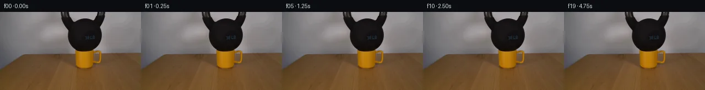
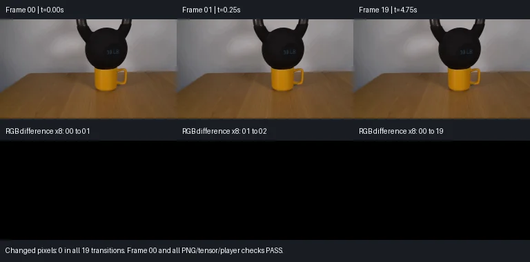

V0 · 初版 · 最终提交
![]()
Observable Generation Trace
把最终像素视频、Harness 冻结的每轮候选、真实工具事件和 Agent 自述放在同一页。可观测证据与模型自述分开标记，避免把“模型说它检查过”误当成真实工具调用。
![首帧]()
Static locked-off single-shot with fixed frame throughout filmed with constant framerate in real-time. The scene shows a realistic scientific demonstration. The scene only contains the described setup and actions. The yellow ceramic mug is on a wooden table. The 30lb kettlebell is placed on top of the yellow ceramic mug.
首帧显示在左侧播放器初始画面。Track 权限、隔离和 tensor 一致性来自 run manifest，而不是 METHOD.md。
默认勾选初版和最终版；可选其他版本一起同步播放。仅检查图更新的连续重复快照已合并，回退旧视频仍保留为一次修订。
Observable events
来源：events.jsonl + run manifest
此 Track 禁止读取输出图片。逐轮预览由外部 Harness 自动冻结，只用于事后审计，生成 Agent 当时看不到这些页面。
Frozen candidates
每张图来自该 round 的真实 00 / 01 / 05 / 10 / 19 帧

pixels 9d01d670134cff90 · code 304fad35709e6d95
--- previous/generate.py
+++ current/generate.py
@@ -0,0 +1,110 @@
+"""Render an already loaded mug in static equilibrium, using source pixels only."""
+from pathlib import Path
+import base64
+import hashlib
+import json
+import re
+
+import numpy as np
+from PIL import Image, ImageDraw
+
+from artifact_io import save
+
+ROOT = Path(__file__).resolve().parent
+FPS = 4
+COUNT = 20
+
+
+def verify(frames):
+ """Check saved RGB images, packed tensor, and standalone player packets."""
+ with np.load(ROOT / 'pixels.npz', allow_pickle=False) as archive:
+ assert archive.files == ['pixels']
+ tensor = archive['pixels']
+ assert tensor.shape == (144, 256, COUNT)
+ assert tensor.dtype == np.uint32
+ assert int(tensor.max()) <= 0xFFFFFF
+ for t in range(COUNT):
+ with Image.open(ROOT / 'frames' / f'{t:02d}.png') as image:
+ assert image.mode == 'RGB' and image.size == (256, 144)
+ rgb = np.asarray(image, dtype=np.uint8)
+ p = rgb.astype(np.uint32)
+ packed = (p[..., 0] << 16) | (p[..., 1] << 8) | p[..., 2]
+ assert np.array_equal(packed, tensor[..., t]), t
+ assert np.array_equal(rgb, frames[t]), t
+ with Image.open(ROOT / 'first_frame.png') as image:
+ assert np.array_equal(np.asarray(image), frames[0])
+
+ html = (ROOT / 'index.html').read_text()
+ data = json.loads(re.search(r'const DATA=(.*?);\nfunction unpack', html, re.S).group(1))
+ reconstructed = np.frombuffer(base64.b64decode(data['first']), dtype='<u4').copy()
+ assert np.array_equal(reconstructed.reshape(144, 256), tensor[..., 0])
+ assert len(data['deltas']) == COUNT - 1
+ for t, encoded in enumerate(data['deltas'], start=1):
+ packet = np.frombuffer(base64.b64decode(encoded), dtype='<u4')
+ i = 0
+ while i < len(packet):
+ start, count = map(int, packet[i:i+2])
+ i += 2
+ reconstructed[start:start + count] = packet[i:i+count]
+ i += count
+ assert np.array_equal(reconstructed.reshape(144, 256), tensor[..., t]), t
+ assert 'setInterval' in html and '},250)' in html
+
+ changes = np.any(frames[1:] != frames[:-1], axis=-1).sum(axis=(1, 2))
+ mean_deltas = np.abs(frames[1:].astype(np.int16) - frames[:-1].astype(np.int16)).mean(axis=(1, 2, 3))
+ assert np.all(changes == 0), 'The static equilibrium plan must not drift.'
+ return {
+ 'frame_count': COUNT,
+ 'frame_size': [256, 144],
+ 'fps': FPS,
+ 'duration_seconds': COUNT / FPS,
+ 'tensor_shape': list(tensor.shape),
+ 'tensor_dtype': str(tensor.dtype),
+ 'packing': 'uint32 0xRRGGBB; axes y,x,t',
+ 'frame_00_exact_source_pixels': True,
+ 'all_pngs_exact_tensor_match': True,
+ 'all_player_frames_exact_tensor_match': True,
+ 'source_sha256': hashlib.sha256((ROOT / 'first_frame.png').read_bytes()).hexdigest(),
+ 'transition_changed_pixel_counts': changes.tolist(),
+ 'transition_mean_absolute_rgb_deltas': mean_deltas.tolist(),
+ 'later_outputs_review': 'Local code and numeric checks only; no image Read/View tools.',
+ }
+
+
+def transition_sheet(frames, report):
+ sheet = Image.new('RGB', (768, 380), (25, 28, 35))
+ draw = ImageDraw.Draw(sheet)
+ for col, t in enumerate((0, 1, 19)):
+ x = 256 * col
+ draw.text((x + 8, 8), f'Frame {t:02d} | t={t / FPS:.2f}s', fill='white')
+ sheet.paste(Image.fromarray(frames[t]), (x, 28))
+ for col, (a, b) in enumerate(((0, 1), (1, 2), (0, 19))):
+ x = 256 * col
+ delta = np.abs(frames[b].astype(np.int16) - frames[a].astype(np.int16))
+ heat = np.minimum(delta * 8, 255).astype(np.uint8)
+ draw.text((x + 8, 184), f'RGB difference x8: {a:02d} to {b:02d}', fill='white')
+ sheet.paste(Image.fromarray(heat), (x, 204))
+ draw.text((8, 357), 'Changed pixels: 0 in all 19 transitions. Frame 00 and all PNG/tensor/player checks PASS.', fill='white')
… diff truncated; 23 more lines …Final visual checks
Harness 保存的最终产物


Agent claims
以下文字由生成 Agent 撰写，不等同于工具证据
The initial image was supplied visually in the user message. Local Pillow/NumPy checks establish that first_frame.png is RGB, uint8, 256 by 144 pixels. No later output will be opened with an image Read/View tool.
The shot is fixed. A gray wall occupies the upper background, and a wooden tabletop begins near y=77 at the center. The yellow mug body spans approximately x=137–171, y=70–104. Its handle extends to approximately x=184 on the right, from y=71 to y=94. The black kettlebell body spans approximately x=123–184, y=12–73; its handle reaches x=110–191 and is cropped at the upper frame edge. The small blue 30 LB marking sits on the front near x=163, y=48. The bell's bottom contacts the mug's rim around y=71–73. The mug's bottom rests on the table near y=103–104. Warm reflections and soft shadows are already present in the source.
The specified placement is already represented in frame 00: there is no visible gap between the bell and the mug. A 30 lb mass applies about 133 N of static downward force. An intact, thick ceramic mug can plausibly carry that force through its rim and walls in compression. The image does not establish a defective mug, an impact, or continuing downward motion. The continuation therefore holds the existing supported equilibrium. No invented hand, fracture, tipping, particles, camera motion, or lighting change is added. Elastic deformation at this scale is below a pixel. This is a stationary scientific demonstration over the requested observation interval.
Every frame uses the same fixed camera, object positions, contact points, illumination, and pixels. The final frame is displayed during the interval 4.75–5.00 seconds.
| Frame | Start time (s) | Event/state |
|---|---|---|
| 00 | 0.00 | Exact input image; kettlebell supported on the intact mug. |
| 01 | 0.25 | Static equilibrium; ceramic rim transmits the load. |
| 02 | 0.50 | Same intact mug and supported bell. |
| 03 | 0.75 | Same static contact and table support. |
| 04 | 1.00 | No resolved deformation or displacement. |
| 05 | 1.25 | Stable supported load. |
| 06 | 1.50 | Stable supported load. |
| 07 | 1.75 | Stable supported load. |
| 08 | 2.00 | Stable supported load. |
| 09 | 2.25 | Stable supported load. |
| 10 | 2.50 | Stable supported load. |
| 11 | 2.75 | Stable supported load. |
| 12 | 3.00 | Stable supported load. |
| 13 | 3.25 | Stable supported load. |
| 14 | 3.50 | Stable supported load. |
| 15 | 3.75 | Stable supported load. |
| 16 | 4.00 | Stable supported load. |
| 17 | 4.25 | Stable supported load. |
| 18 | 4.50 | Stable supported load. |
| 19 | 4.75 | Final static state; mug remains intact through 5.00 s. |
This continuation preserves a stationary supported load. The source already shows the 30 lb kettlebell contacting the yellow ceramic mug, with the mug standing on the wooden table. The prompt specifies no impact or additional action. A static load of approximately 133 N can plausibly be supported by an intact ceramic mug in compression; no failure threshold can be determined from the image. The chosen continuation leaves it intact and stationary for five seconds.
generate.py reads the source RGB image with Pillow and copies the same uint8 pixel array into 20 frames with NumPy. This is exact source-pixel repetition based on a static-equilibrium interpretation. It is not a dynamic simulation, learned video generation, or a synthesized fracture. It adds no object motion, artificial image noise, or changes of illumination. The appearance, table texture, shadows, markings, and contact geometry are all source pixels. There are no external models, engines, references, network requests, or subagents.
artifact_io.py writes the 20 RGB PNGs, the compressed uint32 0xRRGGBB tensor (pixels, shape 144 × 256 × 20), an inspection contact sheet, and the self-contained browser player. Playback advances every 250 ms: 20 frames at 4 fps, displayed for five seconds. Frame start times run from 0.00 to 4.75 seconds.
transition_check.png contains source/final frame samples and amplified RGB differences. The black difference panels correspond to zero numerical change. These diagnostic images were generated but not visually opened. Verification uses local code only: it checks all PNG pixel arrays against the tensor, decodes the player packets against all 20 tensor frames, checks dimensions and RGB modes, confirms frame 00 exactly equals the input, and records changed-pixel counts and mean absolute RGB differences for all 19 transitions. All transition differences are zero, consistent with the event plan. Results are saved in verification.json.
Run with python generate.py from this workspace. OBSERVATION.md was written before the generator code. The initial user attachment informed scene interpretation; no image Read/View tool was used for later outputs or for a claimed visual review.